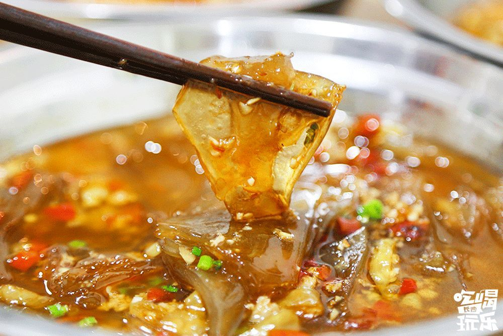
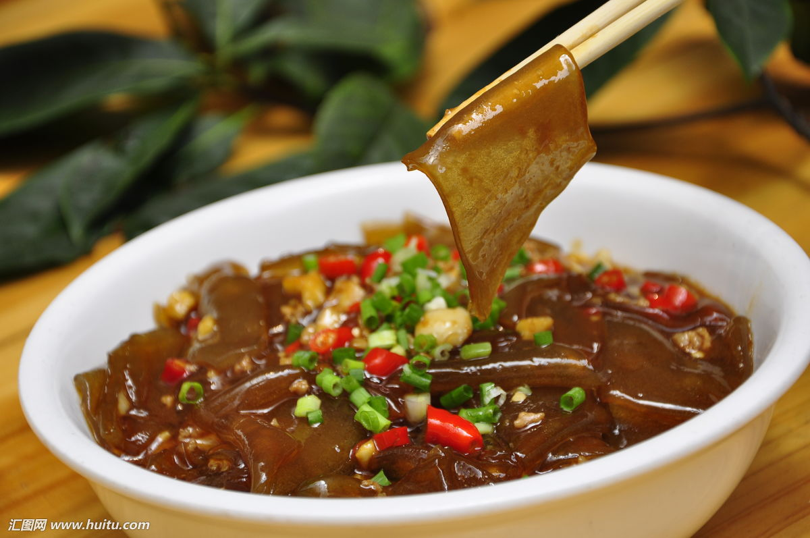
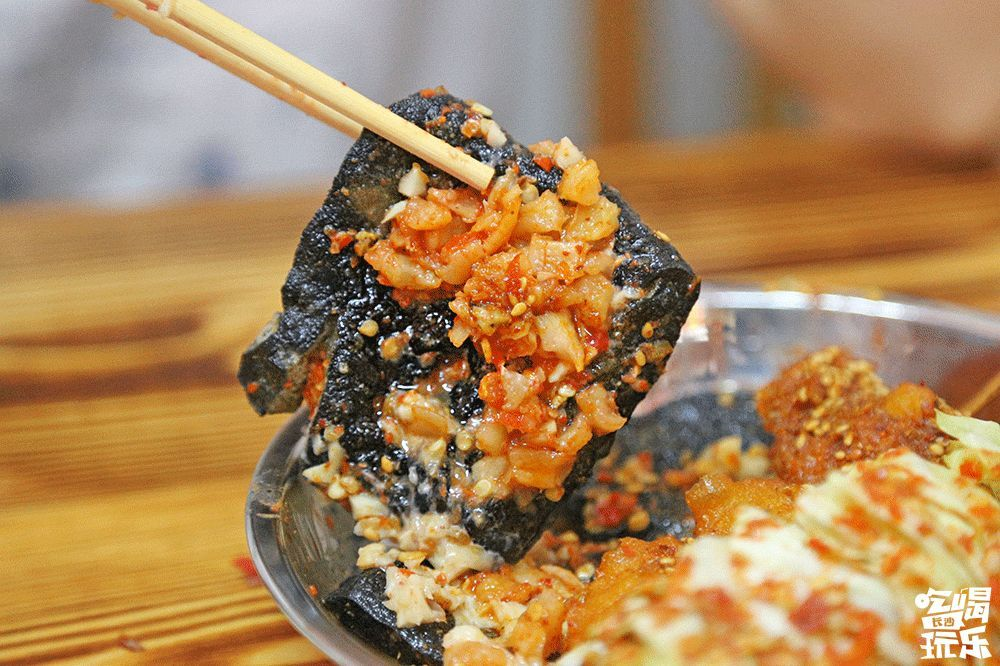
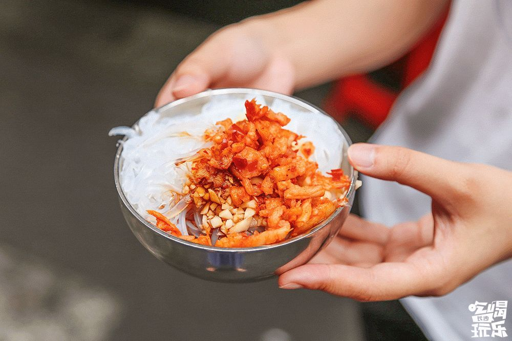
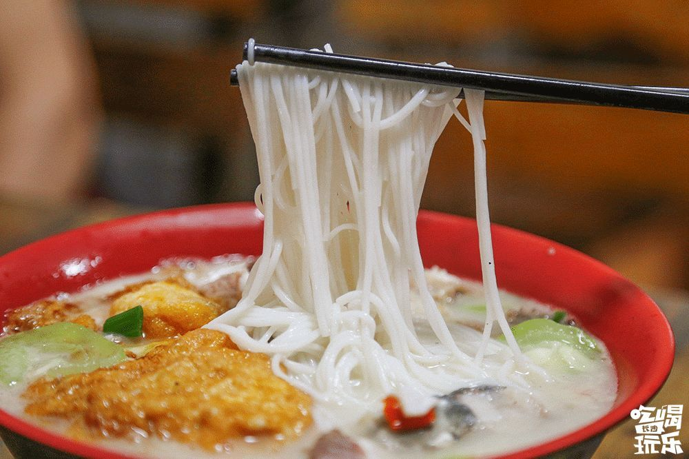
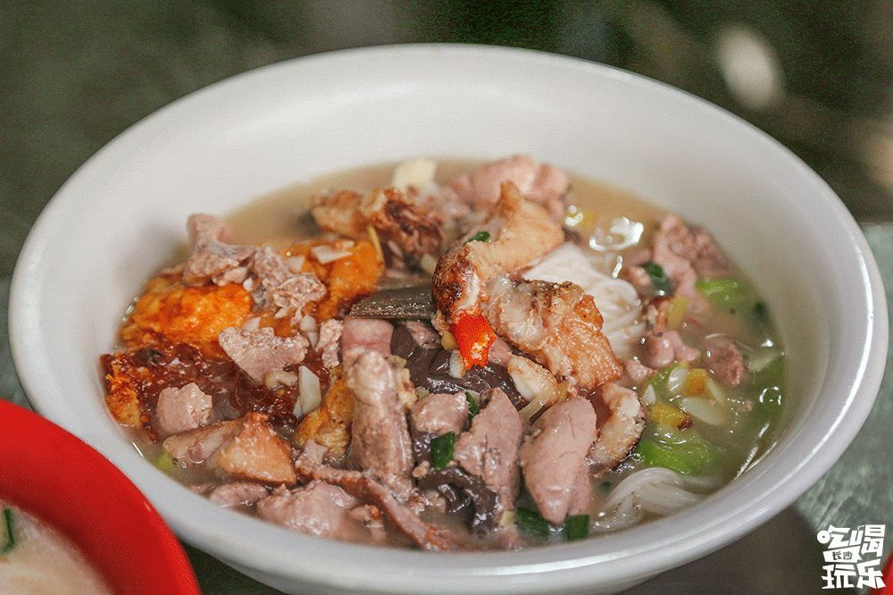
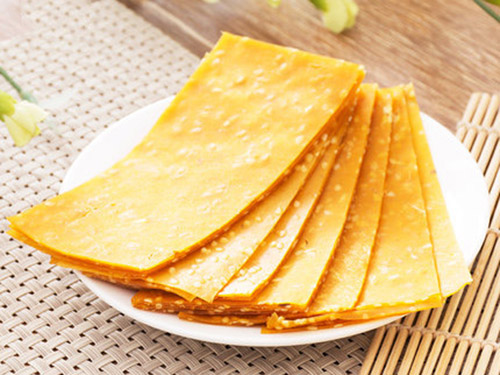
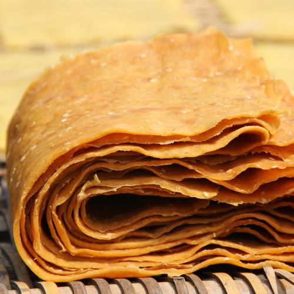

| 荷折肉沫 | 李字号臭豆腐 | ||||
|  |  | 荷折肉沫是衡阳的一道土菜，非常受衡阳人的喜爱。荷折皮类似于红薯粉粉皮，但口感更筋道滑溜。看似清淡的荷折皮，其实是道重口味菜，重油重辣，吃的就是一份口感。 |  |  | 李字号作为几十年的老店，出品非常的稳定，端出来的每份臭豆腐都是一个味，一口咬下去先是脆，再是嫩，接着辣味冲着脑门顶而上，吃的人大汗淋漓！凉粉晶莹剔透，软糯中又有韧劲，吃起来像果冻。 |
| 鱼粉 | 刮红薯片 | ||||
|  |  | 衡阳的鱼粉溯源应该是衡阳县的渣江鱼粉。早在上世纪就声名远扬。衡阳鱼粉还曾上过CCTV的《中国早餐》，在外名气响当当。目前在衡阳的早餐，鱼粉是最受大家欢迎的，鱼粉因为味道鲜美、汤汁浓稠、食后爽心养胃，并且具有很强的饱感，也不容易饿. |  |  | 渐行渐远的老手艺——手工红薯刮片。这种红薯片因具有天然、绿色、香甜的农家特点，以及抗癌的效果。 |